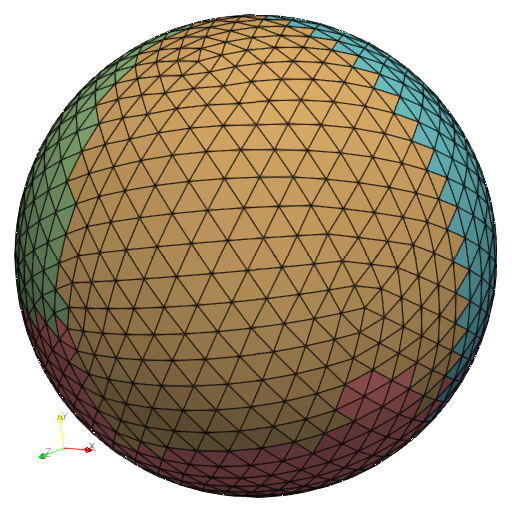
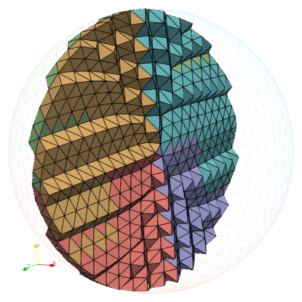
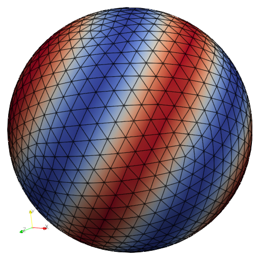
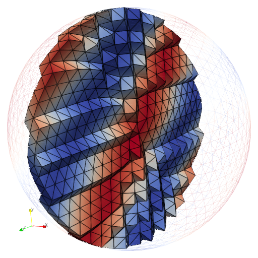

Extract part¶
Description¶
Extract part is a service for extraction of mesh regions by selecting specific mesh entity IDs. Meshes of dimension 0 (point clouds), 1, 2 and 3 are supported. Group information associated with extracted parts is preserved. Facilities for data transfer between input and extracted parts are provided as well.
Three extraction modes are available :
-
enum PDM_extract_part_kind_t¶
Values:
-
enumerator PDM_EXTRACT_PART_KIND_LOCAL¶
The entities of interest are selected locally and are extracted in place
-
enumerator PDM_EXTRACT_PART_KIND_REEQUILIBRATE¶
The entities of interest are selected locally and are redistributed according to the chosen partitioning method
-
enumerator PDM_EXTRACT_PART_KIND_FROM_TARGET¶
The requested target entities are fetched from their location in the input mesh
-
enumerator PDM_EXTRACT_PART_KIND_LOCAL¶
API¶
Initialization
-
PDM_extract_part_t *PDM_extract_part_create(const int dim, const int n_part_in, const int n_part_out, PDM_extract_part_kind_t extract_kind, PDM_split_dual_t split_dual_method, PDM_bool_t compute_child_gnum, PDM_ownership_t ownership, PDM_MPI_Comm comm)¶
Build an Extract Part instance.
- Parameters:
dim – [in] Mesh dimension
n_part_in – [in] Number of input partitions
n_part_out – [in] Number of output partitions
extract_kind – [in] Extraction kind (local/reequilibrate/from target)
split_dual_method – [in] Repartitioning method (used only in PDM_EXTRACT_PART_KIND_REEQUILIBRATE mode)
compute_child_gnum – [in] Enable generation of new global IDs for extraction
ownership – [in] Ownership of extraction
comm – [in] MPI communicator
- Returns:
Initialized PDM_extract_part_t instance
- subroutine pdm_extract_part_create(extrp, dim, n_part_in, n_part_out, extract_kind, split_dual_method, compute_child_gnum, ownership, comm)¶
Build an Extract Part instance
- Parameters:
extrp [c_ptr] :: C pointer to PDM_extract_part_t instance
dim [integer,in] :: Mesh dimension
n_part_in [integer,in] :: Number of input partitions
n_part_out [integer,in] :: Number of output partitions
extract_kind [integer,in] :: Extraction kind (local/reequilibrate/from target)
split_dual_method [integer,in] :: Repartitioning method (used only in PDM_EXTRACT_PART_KIND_REEQUILIBRATE mode)
compute_child_gnum [logical,in] :: Enable generation of new global IDs for extraction
ownership [integer,in] :: Ownership of extraction
comm [integer,in] :: MPI communicator
- class ExtractPart¶
- __init__(dim, n_part_in, n_part_out, extract_kind, split_dual_method, compute_child_gnum, comm)¶
Create an
ExtractPartinstance.- Admissible values for
extract_kindare : ExtractPart.LOCALExtractPart.REEQUILIBRATEExtractPart.FROM_TARGET
- Parameters:
dim (int) – Mesh dimension
n_part_in (int) – Number of input partitions
n_part_out (int) – Number of output partitions
extract_kind (PDM_extract_part_kind_t) – Extraction kind
split_dual_method (PDM_split_dual_t) – Repartitioning method (used only in
ExtractPart.REEQUILIBRATEmode)compute_child_gnum (int) – Enable generation of new global IDs for extraction
comm (MPI.Comm) – MPI communicator
- Admissible values for
Define input mesh
One can define the input mesh either as a Part Mesh Nodal instance:
-
void PDM_extract_part_part_nodal_set(PDM_extract_part_t *extrp, PDM_part_mesh_nodal_t *pmn)¶
Set PDM_part_mesh_nodal_t.
- Parameters:
extrp – [in] PDM_extract_part_t instance
pmn – [in] PDM_part_mesh_nodal_t instance
Or by providing primitive arrays:
-
void PDM_extract_part_part_set(PDM_extract_part_t *extrp, int i_part, int n_cell, int n_face, int n_edge, int n_vtx, int *cell_face_idx, int *cell_face, int *face_edge_idx, int *face_edge, int *edge_vtx, int *face_vtx_idx, int *face_vtx, PDM_g_num_t *cell_ln_to_gn, PDM_g_num_t *face_ln_to_gn, PDM_g_num_t *edge_ln_to_gn, PDM_g_num_t *vtx_ln_to_gn, double *vtx_coord)¶
Set partition.
- Parameters:
extrp – [in] PDM_extract_part_t instance
i_part – [in] Partition identifer
n_cell – [in] Number of cells
n_face – [in] Number of faces
n_edge – [in] Number of edges
n_vtx – [in] Number of vertices
cell_face_idx – [in] Index for cell→face connectivity (size = n_cell+1)
cell_face – [in] Cell→face connectivity (size = cell_face_idx[n_cell])
face_edge_idx – [in] Index for face→edge connectivity (size = n_face+1)
face_edge – [in] Face→edge connectivity (size = face_edge_idx[n_face])
edge_vtx – [in] Edge→vtx connectivity (size = 2*n_edge)
face_vtx_idx – [in] Index for face→vtx connectivity (size = n_face+1)
face_vtx – [in] Face→vtx connectivity (size = face_vtx_idx[n_face])
cell_ln_to_gn – [in] Cell global IDs (size = n_cell)
face_ln_to_gn – [in] Face global IDs (size = n_face)
edge_ln_to_gn – [in] Edge global IDs (size = n_edge)
vtx_ln_to_gn – [in] Vertex global IDs (size = n_vtx)
vtx_coord – [in] Vertex coordinates (size = 3*n_vtx)
-
void PDM_extract_part_n_group_set(PDM_extract_part_t *extrp, PDM_bound_type_t bound_type, int n_group)¶
Set number of groups.
- Parameters:
extrp – [in] PDM_extract_part_t instance
bound_type – [in] Kind of group
n_group – [in] Number of groups
-
void PDM_extract_part_part_group_set(PDM_extract_part_t *extrp, int i_part, int i_group, PDM_bound_type_t bound_type, int n_group_entity, int *group_entity, PDM_g_num_t *group_entity_ln_to_gn)¶
Set partition group.
- Parameters:
extrp – [in] PDM_extract_part_t instance
i_part – [in] Partition identifier
i_group – [in] Group identifier
bound_type – [in] Kind of group
n_group_entity – [in] Number of entities in current group
group_entity – [in] Local IDs of entities in group (size = n_group_entity)
group_entity_ln_to_gn – [in] Group-specific global IDs of entities in group (size = n_group_entity)
One can define the input mesh either as a Part Mesh Nodal instance:
- subroutine pdm_extract_part_part_nodal_set(extrp, pmn)¶
Set PDM_part_mesh_nodal_t
- Parameters:
extrp [c_ptr,in] :: C pointer to PDM_extract_part_t instance
pmn [c_ptr,in] :: C pointer to PDM_part_mesh_nodal_t instance
Or by providing primitive arrays:
- subroutine pdm_extract_part_part_set(extrp, i_part, n_cell, n_face, n_edge, n_vtx, cell_face_idx, cell_face, face_edge_idx, face_edge, edge_vtx, face_vtx_idx, face_vtx, cell_ln_to_gn, face_ln_to_gn, edge_ln_to_gn, vtx_ln_to_gn, vtx_coord)¶
Set partition
- Parameters:
extrp [c_ptr,value] :: C pointer to PDM_extract_part_t instance
i_part [integer,in] :: Partition identifer
n_cell [integer,in] :: Number of cells
n_face [integer,in] :: Number of faces
n_edge [integer,in] :: Number of edges
n_vtx [integer,in] :: Number of vertices
cell_face_idx (*) [integer,pointer] :: Index for cell→face connectivity (shape = [n_cell+1])
cell_face (*) [integer,pointer] :: Cell→face connectivity (shape = [cell_face_idx(n_cell+1)])
face_edge_idx (*) [integer,pointer] :: Index for face→edge connectivity (shape = [n_face+1])
face_edge (*) [integer,pointer] :: Face→edge connectivity (shape = [face_edge_idx(n_face+1)])
edge_vtx (*) [integer,pointer] :: Edge→vtx connectivity (shape = [2*n_edge])
face_vtx_idx (*) [integer,pointer] :: Index for face→vtx connectivity (shape = [n_face+1])
face_vtx (*) [integer,pointer] :: Face→vtx connectivity (shape = [face_vtx_idx(n_face+1)])
cell_ln_to_gn (*) [integer,pointer] :: Cell global IDs (shape = [n_cell])
face_ln_to_gn (*) [integer,pointer] :: Face global IDs (shape = [n_face])
edge_ln_to_gn (*) [integer,pointer] :: Edge global IDs (shape = [n_edge])
vtx_ln_to_gn (*) [integer,pointer] :: Vertex global IDs (shape = [n_vtx])
vtx_coord (,) [real,pointer] :: Vertex coordinates (shape = [3, n_vtx])
- subroutine pdm_extract_part_n_group_set(extrp, bound_type, n_group)¶
Set number of groups
- Parameters:
extrp [c_ptr,value] :: C pointer to PDM_extract_part_t instance
bound_type [integer,in] :: Kind of group
n_group [integer,in] :: Number of groups
- subroutine pdm_extract_part_part_group_set(extrp, i_part, i_group, bound_type, n_group_entity, group_entity, group_entity_ln_to_gn)¶
Set partition group
- Parameters:
extrp [c_ptr,value] :: C pointer to PDM_extract_part_t instance
i_part [integer,in] :: Partition identifier
i_group [integer,in] :: Group identifier
bound_type [integer,in] :: Kind of group
n_group_entity [integer,in] :: Number of entities in current group
group_entity (*) [integer,pointer] :: Local IDs of entities in group (shape = [n_group_entity])
group_entity_ln_to_gn (*) [integer,pointer] :: Group-specific global IDs of entities in group (shape = [n_group_entity])
- ExtractPart.part_set(i_part, cell_face_idx, cell_face, face_edge_idx, face_edge, edge_vtx, face_vtx_idx, face_vtx, cell_ln_to_gn, face_ln_to_gn, edge_ln_to_gn, vtx_ln_to_gn, coords)¶
Set partition
- Parameters:
i_part (int) – Partition identifer
cell_face_idx (np.ndarray[np.int32_t]) – Index for cell→face connectivity
cell_face (np.ndarray[np.int32_t]) – Cell→face connectivity
face_edge_idx (np.ndarray[np.int32_t]) – Index for face→edge connectivity
face_edge (np.ndarray[np.int32_t]) – Face→edge connectivity
edge_vtx (np.ndarray[np.int32_t]) – Edge→vtx connectivity
face_vtx_idx (np.ndarray[np.int32_t]) – Index for face→vtx connectivity
face_vtx (np.ndarray[np.int32_t]) – Face→vtx connectivity
cell_ln_to_gn (np.ndarray[npy_pdm_gnum_t]) – Cell global IDs
face_ln_to_gn (np.ndarray[npy_pdm_gnum_t]) – Face global IDs
edge_ln_to_gn (np.ndarray[npy_pdm_gnum_t]) – Edge global IDs
vtx_ln_to_gn (np.ndarray[npy_pdm_gnum_t]) – Vertex global IDs
coords (np.ndarray[np.double_t]) – Vertex coordinates
- ExtractPart.n_group_set(bound_type, n_group)¶
Set number of groups
- Parameters:
bound_type (PDM_bound_type_t) – Kind of group
n_group (int) – Number of groups
- ExtractPart.group_set(i_part, i_group, bound_type, np_group_entity, np_group_entity_ln_to_gn)¶
Set partition group
- Parameters:
i_part (int) – Partition identifier
i_group (int) – Group identifier
bound_type (PDM_bound_type_t) – Kind of group
np_group_entity (np.ndarray[np.int32_t]) – Local IDs of entities in group
np_group_entity_ln_to_gn (np.ndarray[npy_pdm_gnum_t]) – Group-specific global IDs of entities in group
Define extraction
-
void PDM_extract_part_selected_lnum_set(PDM_extract_part_t *extrp, int i_part, int n_extract, int *extract_lnum, PDM_ownership_t ownership)¶
Select local entities to extract.
Note
Use only in PDM_EXTRACT_PART_KIND_LOCAL or PDM_EXTRACT_PART_KIND_REEQUILIBRATE mode
- Parameters:
extrp – [in] PDM_extract_part_t instance
i_part – [in] Partition identifier
n_extract – [in] Number of entities to extract
extract_lnum – [in] Local IDs of entities to extract (1-based, size =
n_extract)ownership – [in] Ownership
-
void PDM_extract_part_target_set(PDM_extract_part_t *extrp, int i_part, int n_target, PDM_g_num_t *target_gnum, int *target_location, PDM_ownership_t ownership)¶
Set the target entities.
Note
Use only in PDM_EXTRACT_PART_KIND_FROM_TARGET mode.
- Parameters:
extrp – [in] PDM_extract_part_t instance
i_part – [in] Partition identifier
n_target – [in] Number of target entities
target_gnum – [in] Global IDs of target entities (size =
n_target)target_location – [in] Initial location of target entities (size = 3 *
n_targetor NULL)ownership – [in] Ownership
-
void PDM_extract_part_renum_method_set(PDM_extract_part_t *extrp, PDM_mesh_entities_t mesh_entity, const char *renum_entity_method, const int *renum_entity_properties)¶
Set the reordering method to be used after partitioning.
- Parameters:
extrp – [in] PDM_extract_part_t instance
mesh_entity – [in] Type of entity
renum_entity_method – [in] Renumbering method
renum_entity_properties – [in] Renumbering parameters for chosen method (can be NULL, check out this page for more details)
- subroutine pdm_extract_part_selected_lnum_set(extrp, i_part_in, n_entity, extract_lnum)¶
Select local entities to extract.
(Use only in PDM_EXTRACT_PART_KIND_LOCAL or PDM_EXTRACT_PART_KIND_REEQUILIBRATE mode)
- Parameters:
extrp [c_ptr,value] :: C pointer to PDM_extract_part_t instance
i_part_in [integer,in] :: Partition identifier
n_entity [integer,in] :: Number of entities to extract
extract_lnum (*) [integer,pointer] :: Local IDs of entities to extract (shape = [n_entity])
- subroutine pdm_extract_part_target_set(extrp, i_part, n_target, target_gnum, target_location)¶
Set the target entities.
(Use only in PDM_EXTRACT_PART_KIND_FROM_TARGET mode)
- Parameters:
extrp [c_ptr,value] :: C pointer to PDM_extract_part_t instance
i_part [integer,in] :: Partition identifier
n_target [integer,in] :: Number of target entities
target_gnum (*) [integer,pointer] :: Global IDs of target entities (shape = [n_target])
target_location (*) [integer,pointer] :: Initial location of target entities (shape = [3*n_target] or null())
- ExtractPart.selected_lnum_set(i_part, extract_lnum)¶
Select local entities to extract
Note
Use only in
ExtractPart.LOCALorExtractPart.REEQUILIBRATEmode- Parameters:
i_part (int) – Partition identifier
extract_lnum (np.ndarray[np.int32_t]) – Local IDs of entities to extract (1-based)
- ExtractPart.target_set(i_part, target_gnum, target_location)¶
Set the target entities
Note
Use only in
ExtractPart.FROM_TARGETmode- Parameters:
i_part (int) – Partition identifier
target_gnum (np.ndarray[npy_pdm_gnum_t]) – Global IDs of target entities
target_location (np.ndarray[np.int32_t]) – Initial location of target entities (triplets : (rank, part, local ID))
Compute extraction
-
void PDM_extract_part_compute(PDM_extract_part_t *extrp)¶
Compute extraction.
- Parameters:
extrp – [in] PDM_extract_part_t instance
- subroutine pdm_extract_part_compute(extrp)¶
Compute extraction
- Parameters:
extrp [c_ptr] :: C pointer to PDM_extract_part_t instance
- ExtractPart.compute()¶
Compute extraction
Get extraction
If the input mesh was defined as a Part Mesh Nodal structure, the extracted mesh is also retrieved in the form of a Part Mesh Nodal:
-
void PDM_extract_part_part_mesh_nodal_get(PDM_extract_part_t *extrp, PDM_part_mesh_nodal_t **extract_pmn, PDM_ownership_t ownership)¶
Retrieve the extracted PDM_part_mesh_nodal_t.
- Parameters:
extrp – [in] PDM_extract_part_t instance
extract_pmn – [out] PDM_part_mesh_nodal_t instance
ownership – [in] Ownership
Otherwise, the extracted mesh can be retrieved using the following accessors:
-
int PDM_extract_part_n_entity_get(PDM_extract_part_t *extrp, int i_part_out, PDM_mesh_entities_t entity_type)¶
Get the number of entities of a given type in extraction.
- Parameters:
extrp – [in] PDM_extract_part_t instance
i_part_out – [in] Partition identifier
entity_type – [in] Type of entity
- Returns:
Number of entities
-
int PDM_extract_part_connectivity_get(PDM_extract_part_t *extrp, int i_part_out, PDM_connectivity_type_t connectivity_type, int **connect, int **connect_idx, PDM_ownership_t ownership)¶
Get connectivity in extraction.
- Parameters:
extrp – [in] PDM_extract_part_t instance
i_part – [in] Partition identifier
connectivity_type – [in] Type of connectivity
connect – [in] Connectivity array (size = connect_idx[n_entity])
connect_idx – [in] Connectivity index (size = n_entity+1)
ownership – [in] Ownership
- Returns:
Number of leading entities
-
int PDM_extract_part_vtx_coord_get(PDM_extract_part_t *extrp, int i_part_out, double **vtx_coord, PDM_ownership_t ownership)¶
Get vertex coordinates in extraction.
- Parameters:
extrp – [in] PDM_extract_part_t instance
i_part – [in] Partition identifier
vtx_coord – [out] Vertex coordinates (size = 3 * n_vtx)
ownership – [in] Ownership
- Returns:
Number of vertices in extraction
-
int PDM_extract_part_ln_to_gn_get(PDM_extract_part_t *extrp, int i_part_out, PDM_mesh_entities_t entity_type, PDM_g_num_t **entity_ln_to_gn, PDM_ownership_t ownership)¶
Get global IDs of entities in extraction.
- Parameters:
extrp – [in] PDM_extract_part_t instance
i_part – [in] Partition identifier
entity_type – [in] Type of entity
entity_ln_to_gn – [out] Global IDs
ownership – [in] Ownership
- Returns:
Number of entities
-
int PDM_extract_part_parent_ln_to_gn_get(PDM_extract_part_t *extrp, int i_part_out, PDM_mesh_entities_t entity_type, PDM_g_num_t **parent_entity_ln_to_gn, PDM_ownership_t ownership)¶
Get parent global IDs of entities in extraction.
- Parameters:
extrp – [in] PDM_extract_part_t instance
i_part – [in] Partition identifier
entity_type – [in] Type of entity
parent_entity_ln_to_gn – [out] Parent global IDs
ownership – [in] Ownership
- Returns:
Number of entities
-
void PDM_extract_part_group_get(PDM_extract_part_t *extrp, const PDM_bound_type_t bound_type, int i_part, int i_group, int *pn_extract_group_entity, int **pextract_group_entity, PDM_g_num_t **pextract_group_entity_ln_to_gn, PDM_g_num_t **pextract_group_entity_parent_ln_to_gn, PDM_ownership_t ownership)¶
Get partition group.
- Parameters:
extrp – [in] PDM_extract_part_t instance
bound_type – [in] Kind of group
i_part – [in] Partition identifier
i_group – [in] Group identifier
pn_extract_group_entity – [out] Number of entities in current group
pextract_group_entity – [out] Local IDs of entities in group (size =
pn_extract_group_entity)pextract_group_entity_ln_to_gn – [out] Group-specific global IDs (in extraction) of entities in group (size =
pn_extract_group_entity)pextract_group_entity_parent_ln_to_gn – [out] Group-specific global IDs of entities in group (size =
pn_extract_group_entity)ownership – [in] Ownership
-
int PDM_extract_part_color_get(PDM_extract_part_t *extrp, int i_part_out, PDM_mesh_entities_t entity_type, int **entity_color, PDM_ownership_t ownership)¶
Get color of entities in extraction (if a renumbering method was used)
- Parameters:
extrp – [in] PDM_extract_part_t instance
i_part – [in] Partition identifier
entity_type – [in] Type of entity
entity_color – [out] Entity color
ownership – [in] Ownership
- Returns:
Number of entities
-
int PDM_extract_part_init_location_get(PDM_extract_part_t *extrp, int i_part_out, PDM_mesh_entities_t entity_type, int **init_location, PDM_ownership_t ownership)¶
Get the initial location of extracted entities.
- Parameters:
extrp – [in] PDM_extract_part_t instance
i_part – [in] Partition identifier
entity_type – [in] Type of entity
init_location – [out] Initial location (rank, part, local ID) of extracted entities (size = n_entity * 3)
ownership – [in] Ownership
- Returns:
Number of entities
If the input mesh was defined as a Part Mesh Nodal instance, the extracted mesh is also retrieved in the form of a Part Mesh Nodal:
- subroutine pdm_extract_part_part_mesh_nodal_get(extrp, pmn, ownership)¶
Retrieve the extracted PDM_part_mesh_nodal_t
- Parameters:
extrp [c_ptr,in] :: C pointer to PDM_extract_part_t instance
pmn [c_ptr,out] :: C pointer to PDM_part_mesh_nodal_t instance
ownership [integer,in] :: Ownership
Otherwise, the extracted mesh can be retrieved using the following accessors:
- subroutine pdm_extract_part_n_entity_get(extrp, i_part_out, entity_type, n_entity)¶
Get the number of entities of a given type in extraction
- Parameters:
extrp [c_ptr,value] :: C pointer to PDM_extract_part_t instance
i_part_out [integer,in] :: Partition identifier
entity_type [integer,in] :: Type of entity
n_entity [integer] :: Number of entities
- subroutine pdm_extract_part_connectivity_get(extrp, i_part_out, connectivity_type, n_entity, connect, connect_idx, ownership)¶
Get connectivity in extraction
- Parameters:
extrp [c_ptr,value] :: C pointer to PDM_extract_part_t instance
i_part_out [integer,in] :: Partition identifier
connectivity_type [integer,in] :: Type of connectivity
n_entity [integer] :: Number of leading entities
connect (*) [integer,pointer] :: Connectivity (shape = [connect_idx(n_entity+1)])
connect_idx (*) [integer,pointer] :: Connectivity index (shape = [n_entity+1])
ownership [integer,in] :: Ownership
- subroutine pdm_extract_part_vtx_coord_get(extrp, i_part_out, n_entity, pvtx_coord, ownership)¶
Get vertex coordinates in extraction
- Parameters:
extrp [c_ptr,value] :: C pointer to PDM_extract_part_t instance
i_part_out [integer,in] :: Partition identifier
n_entity [integer] :: Number of vertices
pvtx_coord (,) [real,pointer] :: Coordinates of vertices (shape = [3, n_entity])
ownership [integer,in] :: Ownership
- subroutine pdm_extract_part_ln_to_gn_get(extrp, i_part_out, entity_type, n_entity, pentity_ln_to_gn, ownership)¶
Get global IDs of entities in extraction
- Parameters:
extrp [c_ptr,value] :: C pointer to PDM_extract_part_t instance
i_part_out [integer,in] :: Partition identifier
entity_type [integer,in] :: Type of entity
n_entity [integer] :: Number of entities
pentity_ln_to_gn (*) [integer,pointer] :: Global IDs
ownership [integer,in] :: Ownership
- subroutine pdm_extract_part_parent_ln_to_gn_get(extrp, i_part_out, entity_type, n_entity, parent_ln_to_gn, ownership)¶
Get parent global IDs of entities in extraction
- Parameters:
extrp [c_ptr,value] :: C pointer to PDM_extract_part_t instance
i_part_out [integer,in] :: Partition identifier
entity_type [integer,in] :: Type of entity
n_entity [integer] :: Number of entities
parent_ln_to_gn (*) [integer,pointer] :: Parent global IDs
ownership [integer,in] :: Ownership
- subroutine pdm_extract_part_group_get(extrp, bound_type, i_part, i_group, n_extract_group_entity, extract_group_entity, extract_group_entity_ln_to_gn, extract_group_entity_parent_ln_to_gn, ownership)¶
Get partition group
- Parameters:
extrp [c_ptr,value] :: C pointer to PDM_extract_part_t instance
bound_type [integer,in] :: Kind of group
i_part [integer,in] :: Partition identifier
i_group [integer,in] :: Group identifier
n_extract_group_entity [integer] :: Number of entities in current group
extract_group_entity (*) [integer,pointer] :: Local IDs of entities in group (shape = [n_extract_group_entity])
extract_group_entity_ln_to_gn (*) [integer,pointer] :: Group-specific global IDs (in extraction) of entities in group (shape = [n_extract_group_entity])
extract_group_entity_parent_ln_to_gn (*) [integer,pointer] :: Group-specific global IDs of entities in group (shape = [n_extract_group_entity])
ownership [integer,in] :: Ownership
- ExtractPart.n_entity_get(ipart, entity_type)¶
Get the number of entities of a given type in extraction
- Parameters:
ipart (int) – Partition identifier
entity_type (PDM_mesh_entities_t) – Type of entity
- Returns:
Number of entities (int)
- ExtractPart.connectivity_get(ipart, connectivity_type)¶
Get connectivity in extraction
- Parameters:
ipart (int) – Partition identifier
connectivity_type (PDM_connectivity_type_t) – Type of connectivity
- Returns:
- Tuple
np_connect_idx (np.ndarray[np.int32_t]) : Connectivity index
np_connect (np.ndarray[np.int32_t]) : Connectivity array
- ExtractPart.vtx_coord_get(ipart)¶
Get vertex coordinates in extraction
- Parameters:
ipart (int) – Partition identifier
- Returns:
Vertex coordinates (np.ndarray[np.double_t])
- ExtractPart.ln_to_gn_get(ipart, entity_type)¶
Get global IDs of entities in extraction
- Parameters:
ipart (int) – Partition identifier
entity_type (PDM_mesh_entities_t) – Type of entity
- Returns:
Global IDs (np.ndarray[npy_pdm_gnum_t])
- ExtractPart.parent_ln_to_gn_get(ipart, entity_type)¶
Get parent global IDs of entities in extraction
- Parameters:
ipart (int) – Partition identifier
entity_type (PDM_mesh_entities_t) – Type of entity
- Returns:
Parent global IDs (np.ndarray[npy_pdm_gnum_t])
- ExtractPart.group_get(ipart, i_group, bound_type)¶
Get partition group
- Parameters:
ipart (int) – Partition identifier
i_group (int) – Group identifier
bound_type (PDM_bound_type_t) – Type of group
- Returns:
- Dictionary
"group_entity"(np.ndarray[np.int32_t]) : Local IDs of entities in group"group_entity_ln_to_gn"(np.ndarray[npy_pdm_gnum_t]) : Group-specific global IDs (in extraction) of entities in group"group_entity_parent_ln_to_gn"(np.ndarray[npy_pdm_gnum_t]) : Group-specific global IDs of entities in group
Data transfer
Application-specific data can be can be transferred between the extracted and input meshes.
If the extraction was performed in PDM_EXTRACT_PART_KIND_LOCAL mode, the transfer is performed locally using the parent indirection.
-
int PDM_extract_part_parent_lnum_get(PDM_extract_part_t *extrp, int i_part_out, PDM_mesh_entities_t entity_type, int **parent_entity_lnum, PDM_ownership_t ownership)¶
Get local IDs of parent entities.
Note
Use only in PDM_EXTRACT_PART_KIND_LOCAL mode
- Parameters:
extrp – [in] PDM_extract_part_t instance
i_part – [in] Partition identifier
entity_type – [in] Type of entity
parent_entity_lnum – [out] Parent local IDs
ownership – [in] Ownership
- Returns:
Number of entities
Otherwise, the transfer is performed by means of a Part-to-part instance for each type of entity.
-
void PDM_extract_part_part_to_part_get(PDM_extract_part_t *extrp, const PDM_mesh_entities_t entity_type, PDM_part_to_part_t **ptp, PDM_ownership_t ownership)¶
Get the PDM_part_to_part_t instance for a given entity type.
Note
Direct exchanges go from extraction to input and reverse exchanges go from input to extraction.
- Parameters:
extrp – [in] PDM_extract_part_t instance
entity_type – [in] Type of entity
ptp – [out] PDM_part_to_part_t instance
ownership – [in] Ownership
-
void PDM_extract_part_part_to_part_group_get(PDM_extract_part_t *extrp, const PDM_bound_type_t bound_type, int i_group, PDM_part_to_part_t **ptp, PDM_ownership_t ownership)¶
Get the Part-to-Part instance for a given group.
Note
Direct exchanges go from extraction to input and reverse exchanges go from input to extraction.
- Parameters:
extrp – [in] PDM_extract_part_t instance
bound_type – [in] Type of group
i_group – [in] Group identifier
ptp – [out] PDM_part_to_part_t instance
ownership – [in] Ownership
Application-specific data can be can be transferred between the extracted and input meshes.
If the extraction was performed in PDM_EXTRACT_PART_KIND_LOCAL mode, the transfer is performed locally using the parent indirection.
- subroutine pdm_extract_part_parent_lnum_get(extrp, i_part_out, entity_type, n_entity, parent_entity_lnum, ownership)¶
Get local IDs of parent entities.
(Use only in PDM_EXTRACT_PART_KIND_LOCAL mode)
- Parameters:
extrp [c_ptr,value] :: C pointer to PDM_extract_part_t instance
i_part_out [integer,in] :: Partition identifier
entity_type [integer,in] :: Type of entity
n_entity [integer] :: Number of entities
parent_entity_lnum (*) [integer,pointer] :: Parent local IDs
ownership [integer,in] :: Ownership
Otherwise, the transfer is performed by means of a Part-to-part instance for each type of entity.
Note
Direct exchanges go from extraction to input and reverse exchanges go from input to extraction.
- subroutine pdm_extract_part_part_to_part_get(extrp, entity_type, ptp, ownership)¶
Get the Part-to-Part instance for a given entity type
- Parameters:
extrp [c_ptr] :: C pointer to PDM_extract_part_t instance
entity_type [integer,in] :: Type of entity
ptp [c_ptr] :: C pointer to PDM_part_to_part_t instance
ownership [integer,in] :: Ownership
- subroutine pdm_extract_part_part_to_part_group_get(extrp, bound_type, i_group, ptp, ownership)¶
Get the Part-to-Part instance for a given group
- Parameters:
extrp [c_ptr] :: C pointer to PDM_extract_part_t instance
bound_type [integer,in] :: Type of group
i_group [integer,in] :: Group identifier
ptp [c_ptr] :: C pointer to PDM_part_to_part_t instance
ownership [integer,in] :: Ownership
- ExtractPart.part_to_part_get(entity_type)¶
Get the PartToPart instance for a given entity type
Note
Direct exchanges go from extraction to input and reverse exchanges go from input to extraction.
- Parameters:
entity_type (PDM_mesh_entities_t) – Type of entity
- Returns:
PartToPart object (
PartToPart)
- ExtractPart.part_to_part_group_get(bound_type, i_group)¶
Get the PartToPart instance for a given group
Note
Direct exchanges go from extraction to input and reverse exchanges go from input to extraction.
- Parameters:
bound_type (PDM_bound_type_t) – Type of group
i_group (int) – Group identifier
- Returns:
PartToPart object (
PartToPart)
Finalization
-
void PDM_extract_part_partial_free(PDM_extract_part_t *extrp)¶
Free all resulting arrays if not owner.
Note
It is not necessary to call this function before calling PDM_extract_part_free.
- Parameters:
extrp – [in] PDM_extract_part_t instance
-
void PDM_extract_part_free(PDM_extract_part_t *extrp)¶
Free the structure.
- Parameters:
extrp – [in] PDM_extract_part_t instance
- subroutine pdm_extract_part_partial_free(extrp)¶
Free all resulting data if not owner
(It is not necessary to call this subroutine before calling PDM_extract_part_free)
- Parameters:
extrp [c_ptr] :: C pointer to PDM_extract_part_t instance
- subroutine pdm_extract_part_free(extrp)¶
Free the structure
- Parameters:
extrp [c_ptr] :: C pointer to PDM_extract_part_t instance
The instance is automatically freed by Python’s garbage collector when it is no longer referenced
Examples¶
Nodal mesh
The following example shows how to perform an extraction (local or with redistribution) with a nodal mesh (extract from test/pdm_t_extract_part_nodal_f.F90).
Mesh generation¶
We start by generating a partitioned 3d mesh.
{kind=link}

Initial partitioned mesh (colored by MPI rank)¶
!---------------------------------------------------------------
integer, parameter :: comm = MPI_COMM_WORLD ! MPI Communicator
integer :: i_rank, ierr
integer :: i_arg
character(len=99) :: arg
integer :: extract_kind ! Extraction kind (LOCAL or REEQUILIBRATE)
integer :: part_method ! Re-partitioning method kind (if REEQUILIBRATE)
logical :: visu ! Enable output for visualization
integer :: dim ! Mesh dimension
integer :: n_part ! Number of partitions on current MPI rank
integer :: n_vtx ! Number of vertices
double precision, pointer :: vtx_coord(:,:) => null() ! Vertex coordinates
integer(pdm_g_num_s), pointer :: vtx_ln_to_gn(:) => null() ! Vertex global IDs
integer :: n_tet ! Number of tetra
integer(pdm_l_num_s), pointer :: tet_vtx(:) => null() ! Tetra->vtx connectivity
integer(pdm_g_num_s), pointer :: tet_ln_to_gn(:) => null() ! Tetra global IDs
integer(pdm_l_num_s), pointer :: parent_num(:) => null() ! Not used
integer(pdm_g_num_s), pointer :: parent_gnum(:) => null() ! Not used
integer(pdm_l_num_s), pointer :: tet_vtx_idx(:) => null() ! Not used
type(c_ptr) :: mesh = C_NULL_PTR ! Initial PartMeshNodal (ParaDiGM object)
integer :: id_tet ! ID of tetra section
type(c_ptr) :: extrp = C_NULL_PTR ! ExtractPart (ParaDiGM object)
integer :: n_selected ! Number of extracted elements
integer(pdm_l_num_s), pointer :: selected(:) => null() ! List of extracted elements
type(c_ptr) :: extract_mesh = C_NULL_PTR ! Extracted PartMeshNodal (ParaDiGM object)
integer :: extract_n_vtx ! Number of extracted vertices
double precision, pointer :: extract_vtx_coord(:,:) => null() ! Extracted vertex coordinates
integer(pdm_g_num_s), pointer :: extract_vtx_ln_to_gn(:) => null() ! Extracted vertex global IDs
integer :: extract_n_tet ! Number of extracted tetra
integer(pdm_l_num_s), pointer :: extract_tet_vtx(:) => null() ! Extracted tetra->vtx connectivity
integer(pdm_g_num_s), pointer :: extract_tet_ln_to_gn(:) => null() ! Extracted tetra global IDs
integer(pdm_l_num_s), pointer :: extract_vtx_parent(:) => null() ! Extracted vertices IDs
double precision, pointer :: vtx_field(:) => null() ! Field at vertices
double precision, pointer :: tet_field(:) => null() ! Field at tetrahedra
double precision, pointer :: extract_vtx_field(:) => null() ! Field at extracted vertices
double precision, pointer :: extract_tet_field(:) => null() ! Field at extracted tetrahedra
integer :: i_tet, i_vtx, i
double precision :: min_x, max_x
!---------------------------------------------------------------
extract_kind = PDM_EXTRACT_PART_KIND_LOCAL
part_method = PDM_SPLIT_DUAL_WITH_HILBERT
visu = .false.
!----------------------------------------
! Parse command line arguments
i_arg = 1
do while (i_arg <= command_argument_count())
call get_command_argument(i_arg, arg)
select case(arg)
case ("-reequilibrate")
extract_kind = PDM_EXTRACT_PART_KIND_REEQUILIBRATE
case ("-part_method")
i_arg = i_arg + 1
call get_command_argument(i_arg, arg)
read(arg, *) part_method
case ("-visu")
visu = .true.
endselect
i_arg = i_arg + 1
enddo
!----------------------------------------
!----------------------------------------
! Initialize MPI
call mpi_init(ierr)
call mpi_comm_rank(comm, i_rank, ierr)
!----------------------------------------
!----------------------------------------
! Generate a simple 3D mesh composed of tetrahedra (1 part per MPI rank)
call PDM_generate_mesh_ball_simplified(comm, & ! <- MPI communicator
n_vtx, & ! -> Local number of vertices
n_tet, & ! -> Local number of tetra
vtx_coord, & ! -> Coordinated of local vertices
tet_vtx_idx, & ! -> Index of tetra->vtx connectivity (not used here)
tet_vtx) ! -> Local tetra->vtx connectivity
call PDM_fortran_free_c(c_loc(tet_vtx_idx))
! Generate global IDs of vtx and tetra (from coordinates)
call generate_gnums(comm, & ! <- MPI communicator
n_vtx, & ! <- Local number of vertices
n_tet, & ! <- Local number of tetra
vtx_coord, & ! <- Coordinated of local vertices
tet_vtx, & ! <- Local tetra->vtx connectivity
vtx_ln_to_gn, & ! -> Global IDs of local vertices
tet_ln_to_gn) ! -> Global IDs of local tetra
!----------------------------------------
!----------------------------------------
! Create a PartMeshNodal instance to group all mesh data into a single structure.
n_part = 1 ! Number of partitions (subdomains) on current MPI rank
dim = 3 ! Mesh dimension (volume)
call PDM_part_mesh_nodal_create(mesh, & ! -> PartMeshNodal instance
dim, & ! <- Mesh dimension
n_part, & ! <- Number of subdomains on current MPI rank
comm) ! <- MPI communicator
! Set vertices
call PDM_part_mesh_nodal_coord_set(mesh, & ! <- PartMeshNodal instance
0, & ! <- ID of current subdomain (i_part)
n_vtx, & ! <- Number of vertices in current subdomain
vtx_coord, & ! <- Coordinates of vertices in current subdomain
PDM_OWNERSHIP_USER) ! <- Ownership
call PDM_part_mesh_nodal_vtx_gnum_set(mesh, & ! <- PartMeshNodal instance
0, & ! <- ID of current subdomain (i_part)
vtx_ln_to_gn, & ! <- Global IDs of vertices in current subdomain
PDM_OWNERSHIP_USER) ! <- Ownership
! Set tetrahedra
id_tet = PDM_part_mesh_nodal_section_add(mesh, & ! <- PartMeshNodal instance
PDM_MESH_NODAL_TETRA4) ! <- Tetrahedra
call PDM_part_mesh_nodal_section_std_set(mesh, & ! <- PartMeshNodal instance
id_tet, & ! <- Tetra section ID
0, & ! <- ID of current subdomain (i_part)
n_tet, & ! <- Number of tetrahedra in current subdomain
tet_vtx, & ! <- Connectivity tetra->vtx in current subdomain
tet_ln_to_gn, & ! <- Global IDs of tetra in current subdomain
parent_num, & ! <- null()
parent_gnum, & ! <- null()
PDM_OWNERSHIP_USER) ! <- Ownership
!----------------------------------------
Extraction¶
We then extract the cells that cross the \((x = 0)\) plane.
{kind=link}

Extracted mesh (colored by MPI rank)¶
!----------------------------------------
! Create ExtractPart instance
call PDM_extract_part_create(extrp, & ! -> ExtractPart instance
dim, & ! <- Dimension
n_part, & ! <- Number of partitions per rank (input)
n_part, & ! <- Number of partitions per rank (output)
extract_kind, & ! <- Extraction kind
part_method, & ! <- Re-partitioning method (not used in LOCAL mode)
.true., & ! <- Generate global IDs restricted to extraction
PDM_OWNERSHIP_KEEP, & ! <- Ownership of extraction
comm) ! <- MPI communicator
! Set input mesh
call PDM_extract_part_part_nodal_set(extrp, mesh)
! Select elements to extract : the ones that cross the (x = 0) plane
allocate(selected(n_tet))
n_selected = 0
do i_tet = 1, n_tet
min_x = 1.d30
max_x = -1.d30
do i = 1, 4
i_vtx = tet_vtx(4*(i_tet-1) + i)
min_x = min(min_x, vtx_coord(1,i_vtx))
max_x = max(max_x, vtx_coord(1,i_vtx))
enddo
if (min_x <= 0.d0 .and. max_x >= 0.d0) then
n_selected = n_selected + 1
selected(n_selected) = i_tet
endif
enddo
call PDM_extract_part_selected_lnum_set(extrp, & ! <- ExtractPart instance
0, & ! <- ID of current subdomain (i_part)
n_selected, & ! <- Local number of extracted elements
selected) ! <- Local IDs of extracted elements
! Realize extraction
call PDM_extract_part_compute(extrp)
! Retrieve extracted mesh
call PDM_extract_part_part_mesh_nodal_get(extrp, & ! <- ExtractPart instance
extract_mesh, & ! -> Extracted mesh (PartMeshNodal)
PDM_OWNERSHIP_USER) ! <- Ownership (user takes ownerhip of 'extract_mesh')
! Vertices
call PDM_part_mesh_nodal_n_vtx_get(extract_mesh, & ! <- Extracted mesh (PartMeshNodal)
0, & ! <- ID of current subdomain (i_part)
extract_n_vtx) ! -> Number of extracted vertices in current subdomain
call PDM_part_mesh_nodal_vtx_coord_get(extract_mesh, & ! <- Extracted mesh (PartMeshNodal)
0, & ! <- ID of current subdomain (i_part)
extract_vtx_coord, & ! -> Coordinates of extracted vertices
PDM_OWNERSHIP_KEEP) ! <- Ownership ('extract_mesh' keeps ownership)
call PDM_part_mesh_nodal_vtx_g_num_get(extract_mesh, & ! <- Extracted mesh (PartMeshNodal)
0, & ! <- ID of current subdomain (i_part)
extract_vtx_ln_to_gn, & ! -> Global IDs of extracted vertices
PDM_OWNERSHIP_KEEP) ! <- Ownership ('extract_mesh' keeps ownership)
! Tetrahedra
call PDM_part_mesh_nodal_section_n_elt_get(extract_mesh, & ! <- Extracted mesh (PartMeshNodal)
id_tet, & ! <- Tetra section ID
0, & ! <- ID of current subdomain (i_part)
extract_n_tet) ! -> Number of extracted tetra in current subdomain
if (extract_kind == PDM_EXTRACT_PART_KIND_LOCAL .and. extract_n_tet /= n_selected) then
print *, "extract_n_tet =", extract_n_tet, " but expected", n_selected
STOP
endif
call PDM_part_mesh_nodal_section_std_get(extract_mesh, & ! <- Extracted mesh (PartMeshNodal)
id_tet, & ! <- Tetra section ID
0, & ! <- ID of current subdomain (i_part)
extract_tet_vtx, & ! -> Extracted connectivity tetra->vtx in current subdomain
extract_tet_ln_to_gn, & ! -> Global IDs of extracted tetra in current subdomain
parent_num, & ! -> null()
parent_gnum, & ! -> null()
PDM_OWNERSHIP_KEEP) ! <- Ownership ('extract_mesh' keeps ownership)
!----------------------------------------
Data transfer¶
Finally, we transfer fields from the initial mesh to the extraction.
Let’s create a dummy field …
{kind=link}

Field on the initial mesh¶
allocate(vtx_field(n_vtx))
vtx_field(:) = cos(4*(vtx_coord(1,:) - vtx_coord(2,:) - vtx_coord(3,:)))
… and transfer it to the extraction (see test/pdm_t_extract_part_nodal_f.F90 for the detailed implementation of the data_transfer procedure).
{kind=link}

Field transferred to the extracted mesh¶
allocate(extract_vtx_field(extract_n_vtx))
if (extract_kind == PDM_EXTRACT_PART_KIND_LOCAL) then
! Local transfer
call PDM_extract_part_parent_lnum_get(extrp, & ! <- ExtractPart instance
0, & ! <- ID of current subdomain (i_part)
PDM_MESH_ENTITY_VTX, & ! <- Vertices
extract_n_vtx, & ! -> Number of extracted vertices in current subdomain
extract_vtx_parent, & ! -> Local IDs of extracted vertices in initial mesh
PDM_OWNERSHIP_KEEP) ! <- Ownership ('extrp' keeps ownership)
extract_vtx_field(1:extract_n_vtx) = vtx_field(extract_vtx_parent(1:extract_n_vtx))
else
! Reequilibrate mode => transfer in parallel
call data_transfer(extrp, & ! <- ExtractPart instance
PDM_MESH_ENTITY_VTX, & ! <- Vertices
vtx_field, & ! <- Field at vertices (local to current subdomain)
extract_n_vtx, & ! <- Number of extracted vertices in current subdomain
extract_vtx_field) ! -> Field at extracted vertices
endif